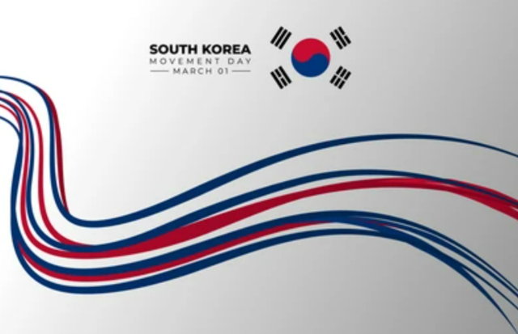

한류
한국과 관련된 것들이 대한민국 이외의 나라에서 인기를 얻는 현상
-
음악 MUSIC
K-pop - 대한민국의 대중가요
(‘Popular music’과 ‘Korea’의 합성어)
MORE
-
드라마 DRAMA
한국뿐만 아니라 주로 아시아, 중동,
중남미 등을 중심으로 큰 인기를 얻음
MORE
-
음식 food
한식(韓食) - 한국에서 발달한
고유하고도 전통적인 음식
MORE
한류의 변천사
한류는 크게 세 단계에 걸쳐 성장했다

한류의 시작?
한류는 좁게는 음악, 영화, 드라마 같은 대중문화부터 시작하여 넓게는 패션, 화장
품, 음식, 관광, 무술, 산업 등 대한민국의 문화가 세계에 알려지는 현상을 뜻한다.
한류라는 용어는 중화권에서 1990년대 후반 H.O.T. 신드롬이 일어나고, 한국의
아이돌 댄스 그룹과 한국 드라마가 중화권에서 청소년층에게 인기를 끌면서 생겨
난 신조어다.
2010년대부터 지금까지 10~20대의 젊은 층에서 전 세계적인 한류의 유행과
폭발적인 영향력의 증가는 유튜브가 만들어진 2000년대 이후 늘어나기 시작했지만
지속적으로 국내 스타들이 해외에서 인기를 얻는 현상으로 나타나기 시작한 것은
사실상 1990년대 후반부터 시작되었다고 봐야 된다.
시기적으로 1990년대 초반에 발달된 인터넷 문화와 깊은 연관성이 있다고 볼 수 있다.